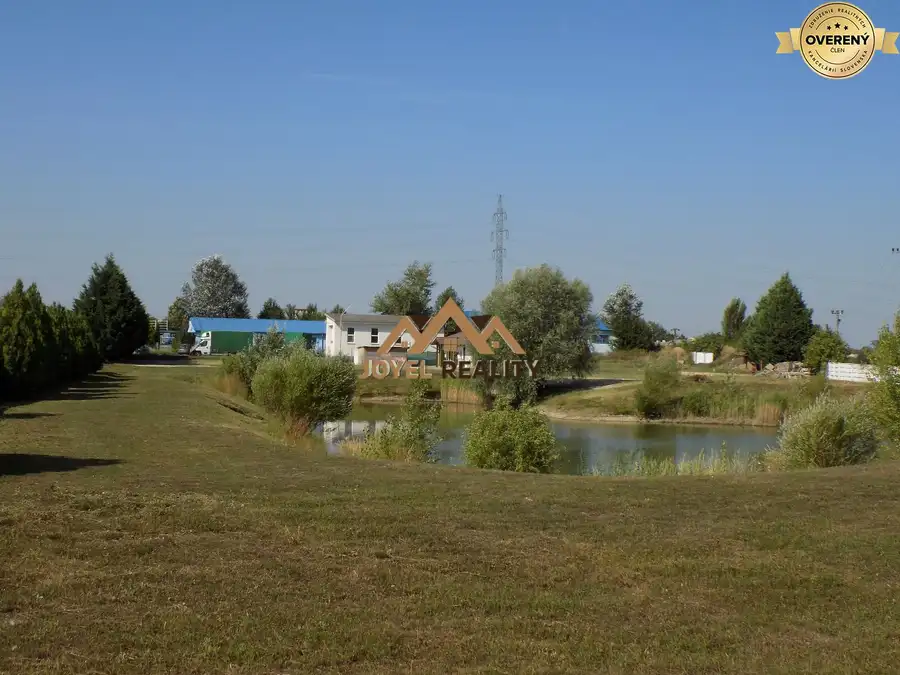
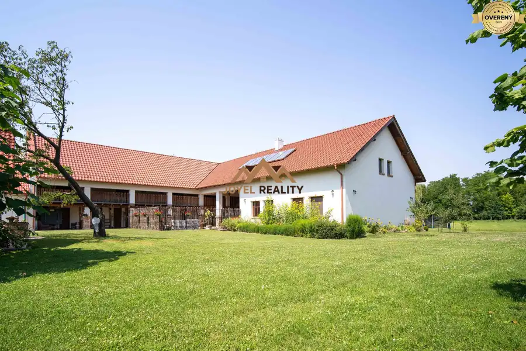
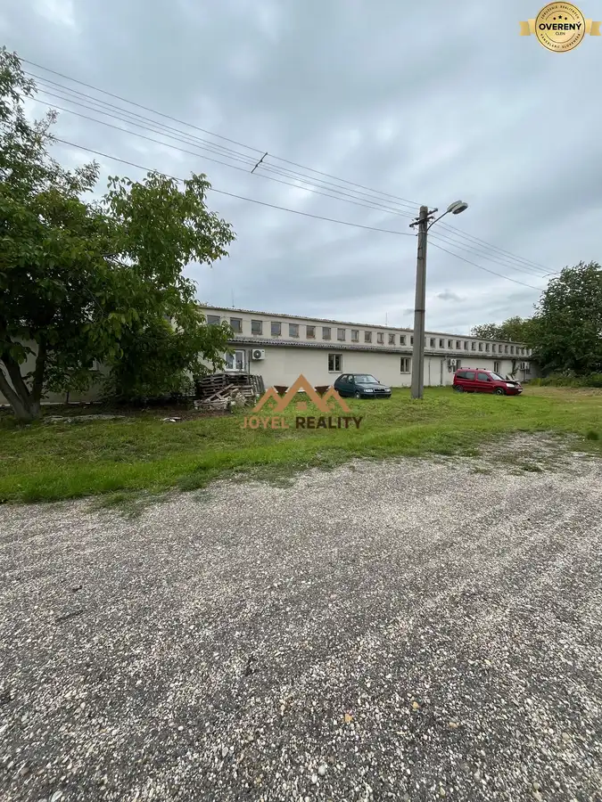

Na predaj Expo Koliba pod Kamzíkom
Nové Mesto
- Dispozícia7-izbový
- Plocha1025 m²
- Poschodie2. z 2
- Stavpôvodný
O nehnuteľnosti
Kúpu reštauračného a ubytovacieho zariadenia vo vychytenej lokalite v Bratislave, v lone prírody, v blízkosti televízneho vysielača Kamzík.
Len málokedy sa na trhu objaví takto výnimočná investičná príležitosť, predaj/ prenájom polyfunkčnej budovy, ktorá má hneď niekoľko výhod:
- lokalita v hlavnom meste, avšak mimo ruchu, v lone prírody s tradičnou slovenskou atmosférou, ktorú poznajú nie len Bratislavčania
- prosperujúci a vyhľadávaný podnik - stabilná klientela, ktorá zaručuje okamžitý zárobok a zhodnotenie Vašej investície
- možnosť organizovať obchodné rokovania, firemné teambuildingy, rodinné oslavy, ochutnávky vín. Organizovať sa dá viacero akcií naraz, objekt je na to veľmi dobre dispozične riešený.
- vynikajúca gastronómia a útulné ubytovanie, s možnosťou využitia v akomkoľvek ročnom období. V lete je k dispozícii veľká terasa, v zime sa zahrejete pri plápolajúcom krbe.
- výborné možnosti parkovania hneď pri vstupe do objektu
INVESTIČNÁ PRÍLEŽITOSŤ
JOYEL reality Vám ponúka na predaj polyfunkčný objekt, ktorý stojí na samostatnom pozemku o rozlohe 2.096 m2. Zastavaná plocha je 590 m2 a celková úžitková plocha je skutočne nadštandardná a má 1025 m2.
Na pozemku je k dispozícii parkovisko s 30 parkovacími miestami.
Objekt bol skolaudovaný v roku 2006 a pozostáva z 3 podlaží: Suterén (1.podzemné poschodie),
Prízemie (1. nadzemné poschodie) a Poschodie (2.
nadzemné poschodie).
Suterén: Vinotéka, V.I.P. Salóniky
V suteréne budovy o rozlohe 300,34 m2 je k dispozícii vinotéka, spolu s dvoma V.I.P. miestnosťami – salónikmi. Kapacita tohto priestoru je pre cca 50 ľudí, a či už usporiadate ochutnávku vín, alebo firemnú akciu, pre všetkých to bude zážitok.
Prízemie: Reštaurácia
Na prízemí (1. nadzemné poschodie) o celkovej rozlohe 479,77 m2 sa nachádza vkusná a útulná reštaurácia /265,97m2/, ktorá má kompletne a moderne vybavenú kuchyňu, krb i gril. Je tu miesto pre cca 70 ľudí. Zamestnanci sú srdcom kuchyne, preto je tu vytvorené zázemie pre zamestnancov i miestnosť pre prevádzkara.
Z reštaurácie sa dostaneme na priestrannú terasu, ktorá je na 80% krytá, preto ani nepriaznivé počasie, či letná búrka nie je problém. Terasa má cca 100 miest na sedenie, štýlové drevené lavice a
stoly, ozvučenie, prístup z reštaurácie aj z vonku. Vonkajší zabudovaný gril je samozrejmosťou.
Poschodie: ubytovacia časť objektu
Na poschodí, o rozlohe 245,39 m2, /z toho 213,39 m2 a 32 m2 balkóny/ sa nachádza recepcia a ubytovacia časť polyfunkčného objektu. K dispozícii sú 2 apartmány a 4 izby. Každá má samostatnú kúpeľňu s toaletou.
Doplňujúce informácie:
Objekt je k dispozícii kompletne zariadený, vrátane inventára a gastro zariadenia. Pri jeho výstavbe sa dbalo na kvalitu materiálov, použitie moderných konštrukčných prvkov ako i prvkov nadštandardnej vybavenosti. Je vykurovaný vlastným plynovým turbokotlom so zásobníkom TÚV.
V objekte je rozvod počítačovej siete, telefónu, televízie.
zabezpečovacieho zariadenia s alarmom.
Je vybavený klimatizačným zariadením aj vzduchotechnikou.
Vyhľadávaná reštaurácia so stálou klientelou a ubytovacie zariadenie, ktoré je počas
celého roka obsadené, zaručuje zárobok a zhodnotenie investície. Možnosť usporadúvania
osláv, teambuildingov, spoločenských akcií, či ochutnávok vína.
Reštaurácia ponúka denné menu, v letných mesiacoch je vonkajšia terasa zaplnená pre ponúkané grilované špeciality. Frekventovaná lokalita v Bratislave, v blízkosti televízneho vysielača Kamzík, je v letných mesiacoch cieľom cykloturistov, turistov a ľudí, ktorí túžia po dobrom jedle a relaxe, a koliba je vychýrenou zastávkou.
CENA: 3.500 000,-eur / + DPH
Dohoda o cene možná pri vážnom záujme.
V cene nehnuteľnosti je provízia pre RK a kompletný právny servis - od vyhotovenia kúpnych zmlúv až po protokolárne odovzdanie nehnuteľnosti vyhotovenia zmluvnej dokumentácie k prevodu nehnuteľnosti (kúpna zmluva, návrh na vklad do katastra nehnuteľností).
Obhliadky Vám sprostredkujeme kedykoľvek. Pre viac informácií prosím kontaktujte makléra: Bc.Lucia Kanišová tel.číslo:
Parametre
| Rozloha pozemku | 2096 m² |
|---|---|
| Zastavaná plocha | 590 m² |
| Úžitková plocha | 1025 m² |
| Poschodie | 2/posledné poschodie |
| Počet poschodí | 2 |
| Počet izieb | 7 |
| Stav | pôvodný |
| Internet | telefónna linka |
| Vykurovanie | vlastné – kombinované |
| Balkón | áno - 4 |
| Terasa | áno |
| Pivnica | áno |
| Výťah | áno |
| Parkovanie | vlastné vyhradené |
| Inžinierske siete | áno |
| Postavené z | tehla |
| Zariadenie | zariadený |
| Klimatizácia | áno |
| Káblová televízia | áno |
| Energetický certifikát | nie |
| Okná | drevené |
| Dátum zverejnenia | 15. 10. 2023 |
Kde to je
Mohlo by Vás zaujímať

Developerské projekty10 1 484 210 €Na predaj lukratívný stavebný pozemok s oplotením a jazerom v Galante Galanta 11417 m² Exkluzívne ponúkam na predaj investičný oplotený pozemok s rozlohou 11417 m2 na ktorom sa nachádza budova o rozlohe 104 m2. Na tomto pozemku sa…
Hotely a penzióny10 1 299 000 €Na predaj malý kúsok slovenského Toskánska - penzión a rodinný dom. Okoč 6 + 42200 m² Hľadáte investičnú príležitosť, ktorá je na prvý pohľad výnimočná a hneď od začiatku Vám prirastie k srdcu? Exkluzivita , jedinečnosť a originalita.…
Nebytové priestory10 169 900 €Predaj skladu a haly, Nové Zámky Svodín 1072 m²1. podlažie ‼️ Znížená cena: 169.900€ (vrátane všetkých poplatkov) *(Pozemok nie je súčasťou predaja – ročný nájom len 100€) Základné informácie: Ponúkame na…